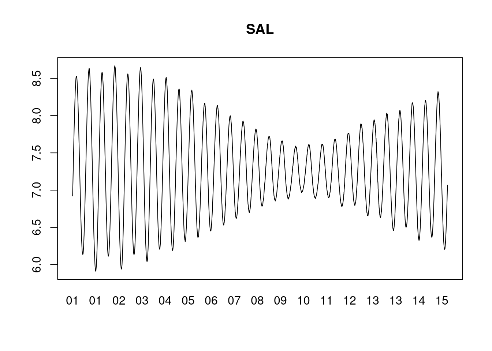
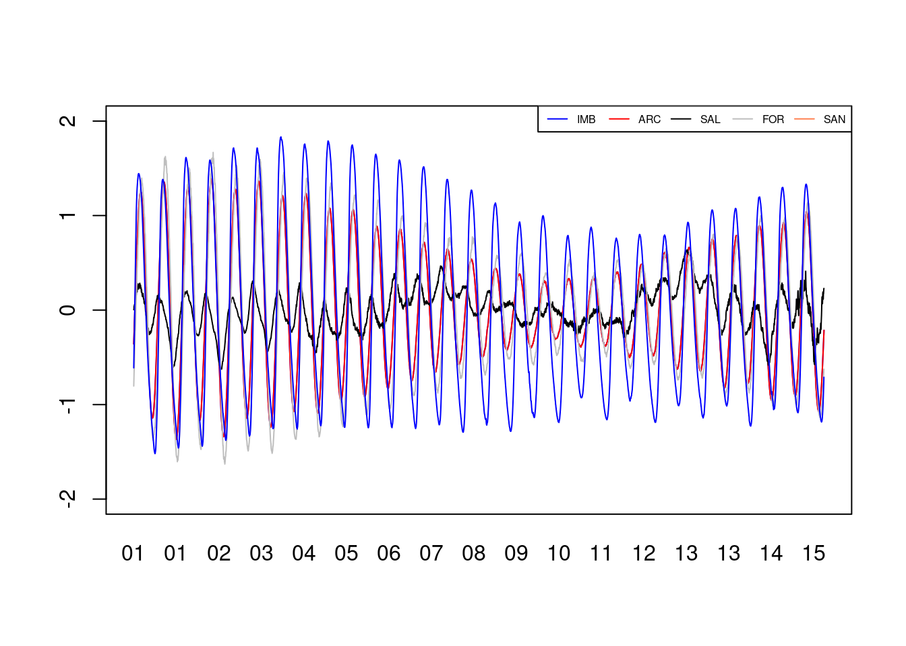

pasta_zip='/home/mauricio/Dropbox/Projetos/Programacao em Python e R - 2021/Analise Dados/IBGE2/zips/'
arquivos=list.files(pasta_zip)
pasta_unzip='/home/mauricio/Dropbox/Projetos/Programacao em Python e R - 2021/Analise Dados/IBGE2/unzip/'
for (i in arquivos)
unzip(paste0(pasta_zip,i),exdir=pasta_unzip)IBGE 2
Primeiramente, os arquivos zip baixados devem ser salvos em uma pasta. Os códigos abaixo extraem os arquivos dos zips e salvam em outra pasta.
Aqui os arquivos são separados e juntados novamente. É feito um looping em cada estação, que são armazenadas em na variável estacoes, e todos os arquivos de cada uma são juntados.
estacoes = c('IMB','ARC','SAL','FOR','SAN') #1..5
DTS=list()
j=0
for (i in estacoes) {
files = list.files(pasta_unzip,pattern=i,full.names = TRUE)
dt = lapply(files, function(x) {read.csv2(file=x, header=F, sep="")})
j=j+1
DTS[[j]] = do.call("rbind", lapply(dt, as.data.frame))
tempo=paste0(DTS[[j]]$V1,DTS[[j]]$V2) #concatena as duas colunas de Data e Hora
DTS[[j]]$tempo=as.POSIXct(tempo,format = "%d/%m/%Y %H:%M:%S")
}Plots únicos de cada estação.
dt=DTS[[1]] #Plot de IMB
dt=DTS[[3]] #Plot de SAL
plot(dt$tempo, dt$V3,ty='l',
xlab='', ylab='', main='SAL', xaxt='n')
axis(1, dt$tempo, format(dt$tempo,"%d"), tick=F)
E aqui o plot múltiplo, com as variáveis padronizadas.
dt=DTS[[3]]
plot(dt$tempo, dt$V3-mean(dt$V3),
ty='l', xlab='', ylim=c(-2,2),
ylab='', col='blue', xaxt='n')
lines(dt$tempo, dt$V3-mean(dt$V3), col='red')
dt=DTS[[1]]
lines(dt$tempo, dt$V3-mean(dt$V3), col='black')
dt=DTS[[4]]
lines(dt$tempo,dt$V3-mean(dt$V3),col='gray')
dt=DTS[[5]]
lines(dt$tempo, dt$V3-mean(dt$V3), col='blue')
axis(1, dt$tempo, tick=F, format(dt$tempo,"%d"))
legend('topright',
legend=c('IMB','ARC','SAL','FOR','SAN'),
lty=c(1,1,1,1,1),
col=c('blue','red','black','gray','coral'),
cex=0.5, ncol = 5)